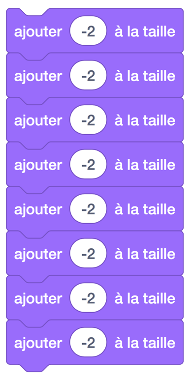
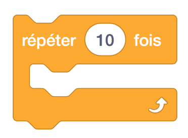
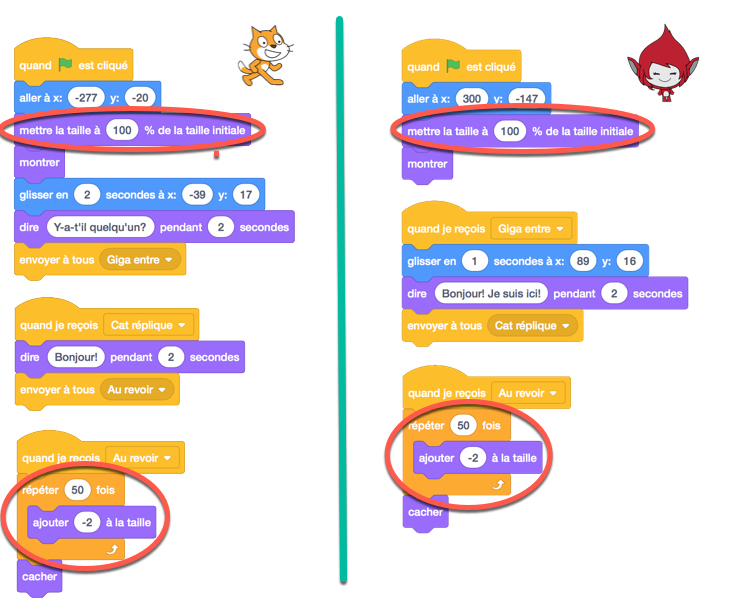
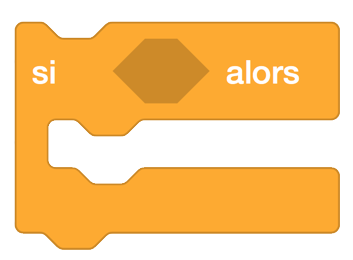

2. Contrôle d’un caractère avec les clés “W,A,S,D” (répétition et conditionnalités)¶
Aperçu rapide de la journée
Introduire le bloc de répétition en faisant rétrécir (faire plus petit) un sprite avant de disparaître. Faites la démonstration d’une programmation simple basée sur les événements en déplaçant un sprite avec WASD en utilisant le bloc “Quand “touche” est cliqué pressé” (when key is pressed). Utilisez le bloc “répéter indéfiniment” (forever), combiné avec le bloc “si-alors” (if-then) pour améliorer le mouvement du sprite.
- 20IN-PT.1 Appliquer diverses stratégies de résolution de problèmes pour résoudre des problèmes de programmation dans le cours Informatique 20.
- 20IN-FP.2 Faire des recherches sur la manière dont les structures de contrôle affectent le déroulement du programme.
Si vous préférez regarder une vidéo, la vidéo suivante montre les mêmes idées que celles que j’ai décrites dans le texte ci-dessous.
2.1. Changer la taille d’un personnage¶
Pour commencer aujourd’hui, nous allons modifier l’exemple créé hier. Pour ouvrir les projets que vous avez déjà réalisés, connectez-vous à Scratch et cherchez l’icône du dossier “Mes projets” ou “My Stuff” en haut à droite de la page.
Si nous souhaitons que l’image d’un sprite sois plus grande ou plus petite que la taille par défaut, nous pouvons utiliser le bloc “ajouter 10 à la taille”, vous pouvez le trouver dans l’onglet Apparence ou looks.
Faites glisser le bloc ci-dessus dans la zone des scripts et double-cliquez dessus. Vous devriez voir le sprite sélectionné devenir un peu plus grand. Expérimentez en changeant le nombre 10 à différentes valeurs. Assurez-vous d’essayer les valeurs positives et négatives!
2.2. Répétition¶
Nous aimerions modifier notre projet précédent pour que les caractères rétrécissent avant qu’ils ne disparaissent. Pour ce faire, nous devons utiliser le bloc “ajouter # à la taille” plusieurs fois. Une façon de le faire serait de mettre plusieurs blocs les uns après les autres, comme ceci:
Bien que cela fait plus ou moins ce que nous voulons, pour que cela rétrécit complètement notre personnage, nous devrions avoir 50 de ces blocs. Il doit y avoir une meilleure façon de faire cela.
En fin de compte, une chose que les ordinateurs peuvent bien faire c’est de répéter des commandes. Plutôt que de dupliquer la même commande plusieurs fois, nous pouvons placer la commande dans un bloc de répétition et indiquer à l’ordinateur combien de fois il doit répéter la commande. Vous pouvez trouver le bloc de répétition sous l’onglet Contrôle.
Pour faire rétrécir un personnage, nous changeons simplement sa taille d’un montant négatif. Cependant, si nous devions modifier la taille du personnage de -50, le personnage deviendrait soudainement la moitié de sa grandeur originale. L’utilisation du bloc de répétition avec un plus petit nombre dans le bloc de taille de changement nous permet de rendre le processus de rétrécissement beaucoup plus lisse. Adaptez le code précédent pour qu’il ressemble à ce qui suit (notez que les changements sont encerclés):
2.3. Mouvement utilisant WASD - Version 1¶
Si nous voulons contrôler le mouvement d’un sprite sur l’écran, une façon de le faire est d’utiliser les commandes WASD classiques sur un clavier, où
- w déplace le personnage vers le haut
- a déplace le personnage vers la gauche
- s déplace le personnage vers le bas
- d déplace le personnage vers la droite
Sous l’onglet Événements, il y a une touche “lorsque la touche est pressé” ou when key pressed. Nous pouvons l’utiliser pour faire réagir un sprite à l’entrée du clavier.
Afin de contrôler le mouvement d’un sprite, nous devons se rappeler du système de coordonnées utilisé par Scratch. Rappelez-vous que le plan de coordonnées dans Scratch est configuré de la même manière que le plan de coordonnées que vous êtes habitué en mathématique, comme indiqué dans l’image ci-dessous.

Pour qu’un sprite puisse se monter sur l’écran, nous devons augmenter la valeur y de la coordonnée. Pour le descendre, nous devons diminuer la valeur y. Pour avancer, nous augmenterions la valeur x. Finalement, pour aller à gauche, nous diminuerions la valeur x. Pour que cela se produise, nous pouvons utiliser le bloc “ajouter # à x” (change x by) et “ajouter # à y” (change y by) trouvés dans l’onglet Mouvement (Motion). Pour se déplacer dans la bonne direction, il suffit de changer la valeur de x et y par une valeur positif/négatif selon la direction dans laquelle nous voulons que le sprite se déplace. Recréez les éléments suivants:
Prenez une minute pour expérimenter avec cette première tentative de mouvement WASD. Vous remarquerez rapidement qu’il y a quelques problèmes avec la façon dont le mouvement du sprite se produit. Le problème le plus évident est que la motion est assez agité. Pour voir cela, pressez l’une des touches WASD sans le relâcher. Le sprite commence à se déplacer, hésite un instant, puis continue.
L’hésitation dans le mouvement des sprites se produit parce que le système d’exploitation de votre ordinateur a un délai intégré avant d’accepter des multiples du même caractère envoyé à partir de votre clavier. C’est une caractéristique très importante du système d’exploitation, et ce n’est pas quelque chose que nous pouvons (ou voudrions) annuler. Si le délai n’existait pas, lorsque vous tapiez quoi que ce soit sur votre ordinateur, vous devez faire extrêmement attention à la durée de chaque touche sinon plusieurs copies de la lettre en cours apparaitrait à l’écran.
Si nous ne pouvons pas remplacer cette fonctionnalité de votre système d’exploitation, comment pouvons-nous améliorer le mouvement WASD que nous avons créé ci-dessus? La réponse est d’utiliser de nouveaux blocs qui nous permettent de continuellement demander à l’ordinateur si une touche particulière est pressée, comme décrit ci-dessous.
2.4. Mouvement utilisant WASD - Version 2¶
Pour rapetisser un personnage dans le code ci-dessus, nous avons utilisé un bloc de répétition 50 pour que l’ordinateur fasse une instruction particulière (changer la taille) plusieurs fois. Un autre bloc qui nous permet de répéter quelque chose plusieurs fois est le bloc répéter indéfiniment (repeat forever):
Comme vous l’avez deviné, tout ce qui se trouve dans le bloc répéter indéfiniment continuera à être répété sans cesse, jusqu’à ce que le programme se termine (ou que vous dites à l’ordinateur d’arrêter la boucle). Dans ce cas, la chose que nous voulons répéter est de demander à l’ordinateur si une touche spécifique est en cours de pressage.
Lorsque nous voulons poser une question à l’ordinateur, nous utilisons un bloc si-alors (if-then):
La case vide à l’intérieur du bloc si-alors peut être rempli par n’importe quelle question qui donne une réponse Vrai ou Faux. Considérez la question suivante (le bloc “touche “espace” pressé?” est dans l’onglet Capteurs (sensing tab)):
Cette question sera vraie si la barre d’espace est pressée lorsque la question est posée, et Faux si la barre d’espace n’est pas pressée lorsque la question est posée. Tout code que vous mettez dans le bloc si-alors ne sera exécuté que si la réponse à la question est vraie.
Si nous mettons plusieurs de ces questions dans un bloc répéter indéfiniment, nous pouvons poser les questions plusieurs fois par seconde. Cela nous permet de créer une version beaucoup plus lisse du mouvement WASD, comme indiqué ci-dessous.
2.5. Problème de pratique¶
Travaillez sur votre premier projet Scratch, pour tout le temps qui reste.
Note
Si votre enseignant ne vous a pas assigné un projet, vous pouvez envisager de faire une courte histoire pour pratiquer vos compétences Scratch. Assurez-vous d’utiliser les diffusions, les blocs de répétition et les blocs si-alors.